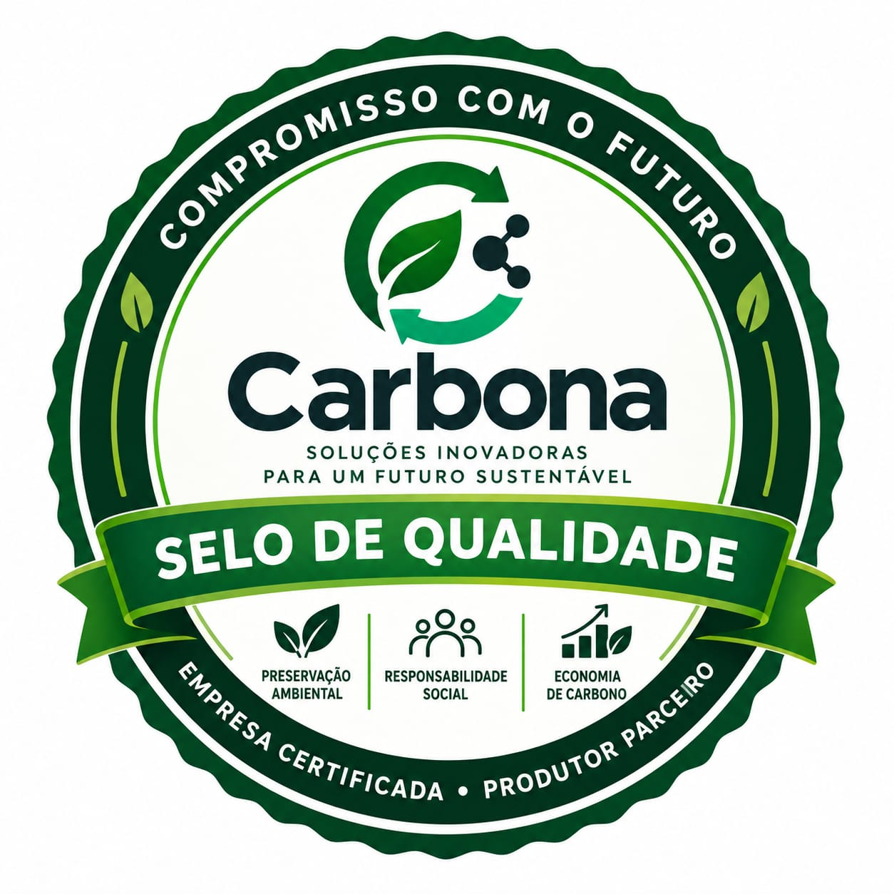

Pressão ESG de clientes e investidores
Grandes compradores, bancos e fundos passaram a exigir inventário de emissões como condição para contratos, crédito e investimento.
A Carbona ajuda sua empresa a medir, reduzir e compensar a pegada de carbono — olhando os dois lados da conta: o carbono que você emite e o que sua operação fixa. Começamos pelo essencial: relatórios claros e acessíveis que mostram quanto você emite, de onde vêm as emissões, quanto carbono você fixa (sequestra) e onde estão as oportunidades de corte e compensação.
Empresas de todos os portes precisam responder por suas emissões, mas esbarram nos mesmos obstáculos.
Grandes compradores, bancos e fundos passaram a exigir inventário de emissões como condição para contratos, crédito e investimento.
Notas de combustível, contas de energia e planilhas dispersas não viram um número confiável. Falta padronização e rastreabilidade.
Metas de redução, créditos de carbono e regulação em avanço pedem medição consistente. Sem base, não há como reduzir nem comprovar.
Você cuida da operação. A Carbona cuida do cálculo, do método e do relatório.
Litros de combustível, kWh de energia, resíduos, fretes e viagens — com um kit de coleta padronizado que simplifica o trabalho.
Cada dado de atividade é convertido em CO₂ equivalente usando fatores oficiais (MCTI, GHG Protocol, IPCC) e ciência de dados.
Um relatório claro por escopo e por fonte, que mostra de onde vêm as emissões e onde estão as maiores oportunidades de corte.
Um método único e rastreável que contabiliza o que sua operação emite e o que ela fixa (sequestra). É esse protocolo que estrutura tanto o inventário de emissões quanto o de remoções — e fecha o ciclo no balanço de carbono.
Definimos o ano-base e os limites da organização (controle operacional) e das operações — escopos 1, 2 e 3. Mapeamos as fontes de emissão e os sumidouros de carbono.
Reunimos dados de atividade das emissões (combustíveis, energia, resíduos, logística) e da fixação (área, espécie, idade da vegetação e práticas de solo), com um kit padronizado.
Aplicamos fatores oficiais: Emissões = Atividade × Fator de Emissão e Remoções = Área × Fator de Fixação. Tudo convertido em tCO₂e.
Consolidamos o balanço líquido: emissões brutas menos remoções. Mostra se a operação é fonte líquida ou sumidouro líquido de carbono.
Entregamos o inventário por escopo e por fonte, somado ao inventário de remoções, com trilha de auditoria pronta para verificação por terceira parte (GHG Protocol e ISO 14064-1).
Definimos metas, projetos de fixação (reflorestamento, SAF, solo) e a compensação do saldo residual, com acompanhamento ao longo do tempo.
A fixação é o carbono que sua operação remove da atmosfera e armazena em biomassa e solo. Seguindo as mesmas fases do protocolo, cada sumidouro vira um dado de atividade (área) multiplicado por um fator de fixação, chegando ao total de tCO₂e removidas.
| Categoria de fixação | Como medimos (dado de atividade) | Observação |
|---|---|---|
| Reflorestamento com nativas | Área plantada, espécies e idade | Sequestro elevado nas primeiras décadas. |
| Floresta plantada (ex.: eucalipto) | Área e ciclo de manejo | Estoque varia com o ciclo de colheita. |
| Sistemas agroflorestais (SAF) | Área e composição do sistema | Combina produção agrícola e sequestro. |
| Recuperação de pastagem degradada | Área recuperada e manejo | Ganho de carbono no solo e na forragem. |
| Vegetação nativa em regeneração | Área e estágio de regeneração | APP e Reserva Legal em recomposição. |
| Carbono no solo (plantio direto) | Área e práticas de manejo | Manejo conservacionista do solo. |
É este o formulário que você precisa preencher para receber seu relatório de carbono. Informe os consumos por escopo e as áreas de fixação: preencha online em minutos ou baixe a planilha para preencher com calma.
Preencha o Kit de Coleta de Dados — o formulário oficial com seus consumos por escopo e as áreas de fixação. A Carbona faz os cálculos e entrega o relatório completo: emissões por escopo e por fonte, balanço com a fixação de carbono e recomendações priorizadas de redução.
É rápido: dá para preencher online em poucos minutos (ou baixar a planilha para preencher com calma). Quer ver antes como fica o resultado? Confira um exemplo de relatório completo.
O método se adapta à sua realidade — do chão de fábrica ao escritório, do campo ao serviço público.
Manufatura, alimentos, química, metalurgia. Combustíveis de processo, energia e refrigeração.
Escritórios, redes de lojas e franquias. Foco em energia elétrica, deslocamentos e logística.
Agropecuária e agroindústria. Diesel, uso de solo, rebanho e insumos com fatores específicos.
Transporte, construção, varejo, saneamento e setor público. Método flexível para cada operação.
Não entregamos só um número. Entregamos entendimento sobre onde reduzir.
Modelos e automação transformam consumos brutos em indicadores confiáveis e comparáveis.
Roteiro simples do que enviar e como enviar. Menos retrabalho, mais rastreabilidade.
Uma réplica digital da sua operação permite simular cenários e prever o efeito de cada corte.
Cálculo alinhado às principais referências do setor.
O investimento depende do porte da operação, do número de fontes de emissão e dos escopos incluídos. Trabalhamos com um valor inicial acessível para o primeiro relatório e planos de acompanhamento. Solicite uma proposta no formulário de contato — respondemos com um orçamento sob medida.
Basicamente seus consumos físicos do período: combustíveis (litros ou kg), energia elétrica (kWh), gases refrigerantes de recarga, resíduos enviados a aterro, fretes e viagens. Enviamos um kit de coleta padronizado que indica exatamente o que buscar em notas e contas.
Com os dados completos em mãos, o relatório inicial costuma ficar pronto em 2 a 4 semanas, dependendo da complexidade e da quantidade de fontes.
Promoção de lançamento As primeiras cotações são entregues em menos de 24 horas — e, para os primeiros compradores, o relatório pode ficar pronto no mesmo dia. Solicite a sua pelo formulário e receba um retorno ainda hoje.

O inventário é elaborado seguindo GHG Protocol e ISO 14064-1, o que o torna uma base sólida para processos de verificação e certificação por terceira parte. A certificação em si é emitida por organismos verificadores independentes — preparamos sua documentação para essa etapa.
Para receber sua cotação e o relatório, preencha o Kit de Coleta de Dados — o formulário oficial com os consumos por escopo e as áreas de fixação. Dá para preencher online em poucos minutos e é tudo o que precisamos para analisar sua operação e retornar rápido.
Este é o único formulário que você precisa preencher para dar início ao relatório. Prefere ver antes como fica o resultado? Confira um exemplo de relatório completo.
Ficou com dúvidas antes de preencher? Fale com a gente no WhatsApp ou por e-mail em leonilsonk@gmail.com.